해양자원개발기사 (2012-05-20 기출문제)
1과목: 해양학개론
1. 다음 중 조력발전의 최적지는?
- 가로림만
- 광양만
- 마산만
- 영일만
(정답률: 알수없음)

2. 대양의 표층수 대순환은 주로 무엇에 의한 것인가?
- 열염(熱廉)순환
- 풍성(風成) 순환
- 열 순환
- 염 순환
(정답률: 알수없음)
3. 사행경로(사류, meandering currents)에서 작용하고 있는 힘은?
- 관성력, 코리올리힘
- 관성력, 코리올리힘, 바람의 응력
- 관성력, 코리올리힘, 원심력
- 코리올리힘, 바람의 응력, 원심력
(정답률: 알수없음)
4. 미나마타병과 이타이 이타이병의 원인이 되는 해양오염물질은 각각 무엇인가?
- 납, 구리
- 수은, 카드뮴
- 구리, 수은
- 납, 카드뮴
(정답률: 알수없음)
5. 다음 중 일반적으로 지각열류량이 가장 작은 곳은?
- 해구
- 해산
- 해양분지
- 대양저산맥
(정답률: 알수없음)
6. 코리올리힘의 벡터 표시를 나타내는 식은? (단,
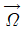
: 지구의 각 운동벡터, V : 유체의 속도, m : 유체의 질량)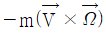
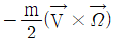
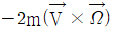
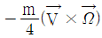
(정답률: 알수없음)
7. 다음 중 열대저기압과 발생지역의 연결이 틀린 것은?
- 태풍(Typhoon) - 북태평양
- 허리케인(Hurricane) - 북대서양
- 사이클론(Cyclone) - 북인도양
- 윌리윌리(Willy-Wllies) - 지중해
(정답률: 알수없음)
8. 석유가 매장되어 있을 수 있는 기본적인 지층구조 및 퇴적층이 아닌 것은?
- 심해저 점토층
- 석회암
- 사암
- 솔트 돔(Salt dome)
(정답률: 알수없음)
9. 심해퇴적물 중 제오라이트(zeolite)의 기원은?
- 생물
- 우주
- 화산
- 풍성
(정답률: 알수없음)
10. 생물기원 퇴적물 중 해수에서 직접 침전한 것이 아니라 석회적 퇴적물이 퇴적한 후 속성작용을 받는 동안 Ca이 석회질 퇴적물 혹은 공극수 내에 풍부한 Mg으로 치환되어 생성된 것은?
- Aragonite
- Barite
- Calcite
- Dolomite
(정답률: 알수없음)
11. 망간단괴에 가장 많이 함유되어 있는 원소는?
- 철
- 니켈
- 구리
- 코발트
(정답률: 알수없음)
12. 해양의 표면염분 분포에 가장 큰 영향을 주는 것은?
- 증발 - 강수량의 차
- 바람분포
- 수온분포
- 심층해류
(정답률: 알수없음)
13. 다음 중 망간단괴가 가장 풍부하게 발견되는 곳은?
- 북대서양 적도 부근
- 남태평양 적도 부근
- 북태평양 적도 부근
- 남극해 주변
(정답률: 알수없음)
14. 다음 중 하구(estuary)에서 조석의 특징은?
- 낙조류가 일어나는 시간이 짧다.
- 소조 때 강한 낙조류가 생긴다.
- 만조에서 간조까지의 시간차가 짧다.
- 간조에서 만조까지의 시간차가 짧다.
(정답률: 알수없음)
15. 심층류의 주원인은?
- 해수의 밀도차
- 바람
- 조석력
- 심해파
(정답률: 알수없음)
16. 북반구에서 편향력의 방향이 서 → 동 이라면 지형류의 방향은?
- 동 → 서
- 남 → 북
- 북 → 남
- 서 → 동
(정답률: 알수없음)
17. 해수 중 화학원소의 평균 체류시간(mean residence time)의 계산식으로 옳은 것은?
- 제거량/유입량
- 용존농도/총량
- 제거속도/유입속도
- 해수중의 총량/유입속도 또는 제거속도
(정답률: 알수없음)
18. 다음 중 우리나라 남해안에 가장 영향을 미치는 해류는?
- 북태평양해류
- 오야시오(Oyashio)
- 중국연안수
- 쓰시마 난류수(Tsushima current)
(정답률: 알수없음)
19. 천해파의 경우 위상속도(C)와 군속도(group velocity : Cg) 사이의 관계는?
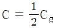
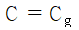
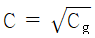
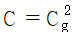
(정답률: 알수없음)
20. 대양저 산맥에서 일어나는 화산활동을 연구하려고 할 때 다음 중 가장 적합한 지역은?
- 하와이
- 아이슬란드
- 일본 후지산
- 미국 세인트헬렌 화산
(정답률: 알수없음)
2과목: 지질해양학
21. 심해저의 세립 퇴적물의 기원(origin)을 고려할 때 ooze는?
- 바람에 의하여 운반, 퇴적된 물질을 말한다.
- 빙하에 의하여 운반, 퇴적된 물질을 말한다.
- 우주(cosmic origin)기원 퇴적물을 말한다.
- 주로 생물의 유해로 구성된 퇴적물을 말한다.
(정답률: 알수없음)
22. 리아스식 해안이란?
- 직선 형태의 해안
- 절벽으로 된 해안
- 굴곡이 심한 해안
- 넓은 평야를 가진 해안
(정답률: 알수없음)
23. 해빈퇴적물 분포의 특징이 아닌 것은?
- 해빈사의 광물 중 대부분은 장석이다.
- 중광물의 함량이 현저히 많다.
- 해빈사는 연안에 이어져 분포한다.
- 주로 모래로 해빈을 구성하고 있다.
(정답률: 알수없음)
24. 순차층서학의 기본단위는?
- facies
- sequence
- parasequence
- highstand
(정답률: 알수없음)
25. 대륙붕 해저에 형성되어 있는 인회토는 여러 광물로 구성되어 있는데, 이중 가장 많은 함유량을 갖고 있는 4가지 성분은?
- SiO2, Fe2O3, K2O3, F
- SiO2, CaO, P2O5, F
- SiO2, Fe2O3, CaO, Al2O3
- SiO2, K2O, CaO, Al2O3
(정답률: 알수없음)
26. 다음 중 동일 기간에서 해양퇴적물이 가장 두껍게 쌓이는 지역은?
- 해저산
- 심해저평원
- 중앙해령
- 대륙주변부
(정답률: 알수없음)
27. 터비다이트(turbidite)의 설명으로 틀린 것은?
- 저탁류에 의해서 퇴적된 퇴적층을 말한다.
- 대륙대 퇴적물의 반 이상을 차지한다.
- 지진 또는 빙하와는 무관하다.
- 뚜렷한 점이층리를 이룬다.
(정답률: 알수없음)
28. 다음 중 해수면 변화의 증거로 적합하지 않은 것은?
- 해안단구
- 울라이트(Oolite)가 대륙붕 깊은 곳에서 발견됨
- 탄성파 탐사결과 수평층리를 보이는 퇴적층 하부에 모래파의 특징을 갖는 반사면이 나타남
- 대륙대에서 육원퇴적물의 발견
(정답률: 알수없음)
29. Panthalassa라는 대양은 현재 지구 대양의 어떤 곳에 해당되는가?
- 북해
- 대서양
- 인도양
- 태평양
(정답률: 알수없음)
30. 삼각주에 관한 설명으로 틀린 것은?
- 삼각주는 육상환경과 해상환경의 점이적 퇴적환경이다.
- 강이 바다와 접하면 강의 유속이 감소됨으로써 하천퇴적물이 막대하게 퇴적되어 삼각주가 만들어진다.
- 삼각주 퇴적물은 상부층, 전면층, 하부층의 3부분으로 나누어지며, 상부층이 삼각주의 대부분을 차지한다.
- 삼각주 퇴적물은 상, 중, 하 3부분에 따하 조직과 성분의 변화가 뚜렷하다.
(정답률: 알수없음)
31. 대륙지각(continental crust)의 일반적인 두께는?
- 11 km
- 35 km
- 2885 km
- 6371 km
(정답률: 알수없음)
32. 해저퇴적물의 특성과 기원의 연구에 이용되는 방법 중 가장 거리가 먼 것은?
- 해수의 염분도 측정
- 입도 분석
- 광물 분석
- 원마도 측정
(정답률: 알수없음)
33. 해양지각은 지구자기장의 변화를 기록하는 자기기록계와 같은 역할을 하는데 이것은 어떤 지질학적 현상에 기인하는가?
- 자화
- 열점
- 판의 섭입
- 판의 충돌
(정답률: 알수없음)
34. 석유 유전 생성 요건에 맞지 않는 것은?
- 지층퇴적 당시 기후가 온난하여 유기물 생산성이 높아야 한다.
- 높은 퇴적율과 함께 산화환경을 이루고 있어야 한다.
- 퇴적 후 유기물 성분 중 탄소와 산소만 남도록 적당한 온도와 함께 높은 압력이 있어야 한다.
- 생성된 탄화수소가 한 곳에 집중되도록 공극률이 높은 구조를 가진 지층이어야 한다.
(정답률: 알수없음)
35. 대륙붕의 퇴적환경에 관한 설명으로 틀린 것은?
- 잔류퇴적물은 대륙붕에는 거의 없다.
- 평균 폭은 40해리이며 내대륙붕이 외대륙붕보다 경사가 급하다.
- 대륙붕에는 사금, 모나자이트, 사청 등 표사광상이 부존한다.
- 퇴적물의 분포가 불규칙하며 해안에서 멀어질수록 일반적으로 입자가 작아진다.
(정답률: 알수없음)
36. 태평양형 대륙주변부의 특징적 요소가 아닌 것은?
- 해구
- 대륙붕
- 대륙대
- 대륙사면
(정답률: 알수없음)
37. 이상적인 터비다이트 퇴적구조에서 최상부 층의 퇴적물은?
- mud
- fine sand
- sand
- gravel
(정답률: 알수없음)
38. 해구(trench)의 특징과 관계가 없는 것은?
- 낮은 열류량
- 작은 중력이상 값
- 심한 지진활동
- 깊은 수심
(정답률: 알수없음)
39. 천해성 퇴적물의 특성에 관한 설명 중 옳지 않은 것은?
- 일반적으로 대양의 주변해저에 분포한다.
- 생물기원물질 양이 극히 적게 함유되어 있다.
- 구성 물질이 심해성 퇴적물에 비해 세립질이라는 점이 특징이다.
- 남극 대륙주변에는 빙하기원 퇴적물이 넓게 분포한다.
(정답률: 알수없음)
40. 산호초의 생태적 요구조건에 알맞은 최저온도 및 지리적 분포에 가장 적합한 것은?
- 약 0℃, 남·북위 20° 지역에 평행하게 대상 분포
- 약 20℃, 남·북위 20° 지역에 평행하게 대상 분포
- 약 0℃, 남·북위 40° 지역에 평행하게 대상 분포
- 약 20℃, 남·북위 40° 지역에 평행하게 대상 분포
(정답률: 알수없음)
3과목: 광물학
41. 다음 중 층상구조를 갖는 규산염 광물은?
- 녹주석
- 녹염석
- 백운모
- 각섬석
(정답률: 알수없음)
42. 다음 중 망간단괴를 구성하는 주성분 원소로 맞는 것은?
- Mn, Fe, Ni, Cu
- Mn, Al, Ni, Co
- Mn, Fe, Si, Al
- Mn, Ni, Cu, Co
(정답률: 알수없음)
43. 다음의 중광물(Heavy mineral) 중 주석(Sn)의 원료광물에 해당하는 것은?
- 저어콘(zircon)
- 금홍석(rutile)
- 진사(cinnabar)
- 석석(cassiterite)
(정답률: 알수없음)
44. 석유생산에 있어서 1차 회수, 때로는 2차 회수 후에 지하에 남아있는 석유를 회수하기 위한 석유회수증진법(Enhanced Oil Recovery)에 사용되지 않는 것은?
- 질소
- 이산화탄소
- 증기
- 계면활성제
(정답률: 알수없음)
45. 토륨을 함유하고 있어 핵연료로 사용될 수 있는 인산염 광물은?
- 인회석
- 석류석
- 모나자이트
- 저어콘
(정답률: 알수없음)
46. 다음 중 쌍정(twin)에 대한 설명으로 옳지 않은 것은?
- 동일 물질로 구성된 2개 이상의 결정이 서로 일정한 결정학적인 관계를 갖고 결합하여 있는 것을 말한다.
- 쌍정의 양쪽부분은 서로 선대칭의 관계 또는 어떤 방향을 축으로 하여 한쪽을 90도 회전한 것과 같은 관계를 갖는다.
- 쌍정의 종류로는 접촉, 투입 및 반복쌍정 등이 있다.
- 쌍정에 있어서 양쪽부분이 결합하여 있는 면을 접합면이라고 하는데 접합면은 보통 쌍정면과는 일치한다.
(정답률: 알수없음)
47. 퇴적물로부터 중광물(heavy mineral)을 분리할 때 일반적으로 사용되는 중액은?
- 에탄올
- 벤젠
- 브로모포름
- 테트라클로로메탄
(정답률: 알수없음)
48. 다음 중 자철석의 조흔색으로 맞는 것은?
- 적색
- 흑색
- 백색
- 녹색
(정답률: 알수없음)
49. 다음 중 탄산염 광물에 해당하는 것은?
- 망가나이트
- 마그네사이트
- 회중석
- 방연석
(정답률: 알수없음)
50. 다음 중 티탄철석에 대한 설명으로 맞는 것은?
- 화학식은 FeTiO3로 산화광물이다.
- 적색을 띤다.
- 등축정계에 속한다.
- 비중은 7.2이다.
(정답률: 알수없음)
51. LNG(liquified natural gas)의 주성분은?
- 부탄
- 프로판
- 에탄
- 메탄
(정답률: 알수없음)
52. 결정은 성장하면서 일정한 모습을 가지게 되는데, 결정 또는 결정 집합체가 나타내는 일반적인 모양을 정벽(habit)이라 한다. 아래 그림은 망간광물에서 흔히 관찰되는 고사리 모양의 정벽인데 어떤 종류의 정벽인가?
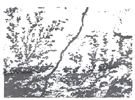
- 주상
- 운모상
- 포도상
- 수지상
(정답률: 알수없음)
53. 다음 중 주상의 벽개를 보이는 대표적인 광물은?
- 금홍석
- 방해석
- 방연석
- 형석
(정답률: 알수없음)
54. 망간단괴 성분의 기원으로서 옳지 않은 것은?
- 열수기원
- 속성기원
- 해양성기원
- 접촉교대기원
(정답률: 알수없음)
55. 중앙 해령 근의 해저 열수광화작용에 의해 유용한 광물이 농집된 광상형은?
- 다금속 유화광상
- 정마그마광상
- 접촉교대광상
- 기성광상
(정답률: 알수없음)
56. 해양 환경에서만 생성되는 화학적 기원은 광물은?
- 해록석
- 조분석
- 고령석
- 사금석
(정답률: 알수없음)
57. 광물의 색을 좌우하는 주요 요인이 아닌 것은?
- 화학조성
- 결정구조
- 불순물
- 점밀도
(정답률: 알수없음)
58. 다음 중 [SiO4] 사면체층과 [Al(O, OH)6] 팔면층이 1:1로 결합한 점토광물은?
- 캐올리나이트
- 녹니석
- 일라이트
- 스멕타이트
(정답률: 알수없음)
59. 다음 중 코발트-망간각(Co-rich manganese crust)의 주분포 해심은?
- 500 m 이하
- 1000 ~ 2000 m
- 2500 ~ 5000 m
- 5000 m 이상
(정답률: 알수없음)
60. 메탄, 황화수소, 이산화탄소 등의 가스가 고압저온조건에서 물과 결합해 생기는 얼음과 비슷한 고체물질로서 해저 원유 수송 시 파이프라인을 막기도 하며 최근 동해에서 발견되어 미래에너지원으로도 평가받고 있는 것은 무엇인가?
- 가스 하이드레이트(gas hydrate)
- 콘덴세이트(condensate)
- 케로진(kerogen)
- 천연가스(natural gas)
(정답률: 알수없음)
4과목: 탐사공학
61. 배나 항공기를 이용하여 중력탐사를 할 때 빠른 속도 때문에 발생되는 지구 자체의 원심 가속도 변화로 인한 중력의 변화를 보정하는 것은?
- 에트뵈스 보정
- 계기 보정
- 지형 보정
- 위도 보정
(정답률: 알수없음)
62. 다음 중 전기비저항 검층에 속하는 것은?
- 핵자기공명 검층
- 중성자 검층
- 공경 검층
- 노말 검층
(정답률: 알수없음)
63. 지자기의 단위 γ(gamma)를 SI 단위계로 표현한 것으로 맞는 것은? (단, T는 테슬라(tesla)이다.)
- 1γ = 1 T
- 1γ = 10-3 T
- 1γ = 10-6 T
- 1γ = 10-9T
(정답률: 알수없음)
64. 암석이나 퇴적물에서의 탄성파의 속도에 관한 일반적인 설명으로 옳지 않은 것은?
- 불포화된 퇴적물은 포화된 퇴적물보다 속도가 느리다.
- 미고결 퇴적물은 고결 퇴적물보다 속도가 느리다.
- 포화된 미고결 퇴적물들은 퇴적물의 종류에 따라 속도가 다르다.
- 풍화된 암석은 풍화되지 않은 암석보다 속도가 느리다.
(정답률: 알수없음)
65. 굴절법 탐사방법이 개발된 초기에 유전 지역에서 심도가 얕은 암염도(salt dome)을 조사하는데 매우 유용하게 사용되었으며, 짧은 시간 내에 비교적 광범위한 지역을 손쉽게 조사할 수 있기 때문에 새로운 지역에 대한 예비 탐사에도 효과적으로 이용되는 탐사 방법은?
- 팬터밍(phantoming)
- 인라인(in-line) 탐사법
- 측선발파법(profile shooting)
- 선형발파법(fan-shooting)
(정답률: 알수없음)
66. 탄성파가 전파될 때 구형 파면은 새로운 2차 파면을 형성하면서 계속 전파해간다. 이런 현상과 관련된 원리 또는 법칙은 무엇인가?
- 페르마의 원리
- 호이겐스의 원리
- 스넬의 법칙
- 데카르트의 법칙
(정답률: 알수없음)
67. 탄성파 탐사에서 횡파의 전파속도(Vs)에 대한 관계식으로 맞는 것은? (단, G : 강성률, ρ : 밀도, E : 영률, ν : 포아송비, k : 체적탄성률)
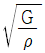
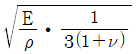
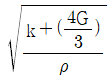
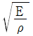
(정답률: 알수없음)
68. 중력탐사자료에 대한 해석법으로 가장 적합한 것은?
- 2차 미분법
- 포아송 관계식
- 동일선법
- 로그-파워법
(정답률: 알수없음)
69. 일반적으로 해저면은 좋은 반사면이다. 해수와 해저면의 P파 속도는 1.5 km/s로 동일하지만 각각의 밀도가 1.0, 2.0 g/cm3으로 다른 경우 이 해저면의 반사계수는?
- 0.13
- 0.33
- 0.53
- 0.93
(정답률: 알수없음)
70. 시추 도중 시추동이 공벽에 점착되거나 심한 휨 또는 뒤틀림으로 절단되는 사고가 발생할 때, 시추공 내에 남아 있는 절단된 시추동의 일부를 제거하는 작업을 무엇이라 하는가?
- 수압 파쇄(hydraulic fracturing)
- 천공(perforation)
- 산처리(acidizing)
- 피슁(fishing)
(정답률: 알수없음)
71. 다음 중 지자기의 일변화(diurnal variation)에 가장 영향을 끼치는 것은?
- 태양
- 맨틀이나 외핵의 운동
- 유도전자장
- 자기폭풍
(정답률: 알수없음)
72. 시료의 단면적이 A, 길이가 L인 물체가 자기 모멘트 M을 갖는다면 이 물체의 자화강도는?
- A/LM
- L/MA
- M/LA
- LA/M
(정답률: 알수없음)
73. 지오이드면보다 높은 산에서의 중력 측정치에 대하여 프리에어(Free-air) 및 부게(Boguer) 보정은 어떻게 해야 하는가?
- 측정치에 프리에어 및 부게 보정값을 둘 다 더한다.
- 측정치에서 프리에어 및 부게 보정값을 둘 다 뺀다.
- 측정치에 프리에어 보정값은 더하고 부게 보정값은 뺀다.
- 측정치에서 프리에어 보정값은 빼고 부게 보정값은 더한다.
(정답률: 알수없음)
74. 다음 중 시추 이수의 기능이 아닌 것은?
- 공벽 보호 기능
- 슬러지 제거 기능
- 비트의 냉각 기능
- 시추관 하중 증가 기능
(정답률: 알수없음)
75. 해상 탄성파탐사에서 지오폰의 역할을 하는 수신기를 하이드로폰이라고 하는데 하이드로폰은 물속에서 어떤 물리량의 변화에 반응하는가?
- 압력
- 변위
- 속도
- 진동
(정답률: 알수없음)
76. 탄성파탐사의 주시곡선도(time-distance graph)에서 시간절편(intercept time)이란 다음 중 무엇을 주시를 나타내는 직선을 원점거리까지 연장하였을 때 시간축과 만나는 시간인가?
- 직접파
- 굴절파
- 반사파
- 표면파
(정답률: 알수없음)
77. 다음 자연잔류자화 중 큐리온도 이하에서 암석 내에서의 화학작용으로 자성광물이 성장하거나 또는 재결정되어 잔류자기를 얻게 되는 현상은?
- 열잔류자화
- 퇴적잔류자화
- 점성잔류자화
- 화학잔류자화
(정답률: 알수없음)
78. 지형 또는 풍화대 변화가 심한 지역에서는 양질의 탄성파 자료를 얻을 수 없다. 양질의 탄성파 자료를 얻기 위해서 어떠한 자료처리를 해야 하는가?
- 동보정(Dynamic correction)
- 속도분석(Velocity analysis)
- 정보정(Static correction)
- 디콘볼루션(Deconvolution)
(정답률: 알수없음)
79. 탄성파의 특성에 대한 설명으로 옳지 않은 것은?
- 종(P)파는 파의 전파방향과 입자의 진동방향이 일치하는 실체파이다.
- 레일리(Rayleigh)파는 입자의 진동과 파동의 전파방향이 같은 방향으로 운동한다.
- 스톤리(Stoneley)파는 고체와 액체의 경계면에서 발생한다.
- 횡(S)파는 파동의 운동방향에 따라 SV파와 SH파가 있다.
(정답률: 알수없음)
80. 다음 중 핵 자력계로 측정할 수 있는 지자기의 요소는?
- 편각
- 지자기장의 수평성분
- 지자기장의 수직성분
- 총자기
(정답률: 알수없음)
5과목: 해양계측학
81. 용승(湧昇)유역에 대한 설명 중 틀린 것은?
- 플랑크톤이 번식한다.
- 수온이 낮다
- 용존산소가 많다.
- 영양염이 많다.
(정답률: 알수없음)
82. 다음 중 만조가 가장 늦게 나타나는 곳은?
- 목포
- 군산
- 인천
- 진남포
(정답률: 알수없음)
83. 위도 30°에서의 관성주기(Inertial period)는?
- 6시간
- 12시간
- 24시간
- 48시간
(정답률: 알수없음)
84. 수심이 깊은 심해에 유속계를 계류한 후, 수거할 때 필요한 기기장치는?
- CTD system
- Sonar system
- Echo sounder
- Acoustic release system
(정답률: 알수없음)
85. 원격탐사의 허색 복합영상자료(False color composit)의 설명으로 옳은 것은?
- 색이 없는 적외선 자료로 임의의 색으로 표시할 수 있다.
- 여러 개의 spectral band를 복합한 digital 자료이다.
- 어떤 spectral band 자료를 그 명도에 따라 여러 색으로 표시한 것이다.
- 삼원색을 복합하여 천연색으로 표시한 것이다.
(정답률: 알수없음)
86. 심해저 망간단괴의 성장속도 측정에 사용할 수 없는 방사성 핵종은?
- 10Be
- 14C
- 230Th
- 231Pa
(정답률: 알수없음)
87. 대조(또는 사리)는 삭, 망과 시기적으로 어떤 관련이 있는가?
- 삭, 망의 1 ~ 3일 전
- 삭, 망의 1 ~ 3일 후
- 삭, 망과 같은 시기
- 삭과 망 사이 중간 시기
(정답률: 알수없음)
88. 외양의 바다색이 연안보다 검푸르게 보이는 이유는?
- 장파장(빛)의 산란
- 단파장의 산란
- 단파장의 반사
- 단파장의 흡수
(정답률: 알수없음)
89. 인천항의 비조화상수가 대조승 8.6 m, 소조승 6.4 m, 평균해면 4.6 m 일 때 대조차는?
- 8.6 m
- 8.0 m
- 6.4 m
- 9.2 m
(정답률: 알수없음)
90. 퇴적물의 입도 분석 자료를 정량적으로 분석하기 위해 계산하는 왜도(Kurtosis)란?
- 평균입도값을 중심으로 한 분산 정도
- 분포 곡선의 뾰족한 정도
- 평균 입도값을 중심으로 한 대칭성
- 분포 곡선의 표준 편차
(정답률: 알수없음)
91. 미고결 해저표층 퇴적물을 자연상태 그대로(undisturbed) 채취하는데 가장 좋은 기구는?
- Piston corer
- Vibratory corer
- Grab
- Rotary drilling corer
(정답률: 알수없음)
92. 1972년 이래 미국 NASA에서 순차적으로 발사한 5개의 NOAA 인공위성은 주로 무엇을 측정하기 위함인가?
- 풍향, 풍속
- 해수 온도
- 해수 색상
- 해안 지형
(정답률: 알수없음)
93. NOAA 위성의 탐사장비로 현재 가장 많이 쓰이고 있는 장비는?
- MSS
- AVHRR
- SMMR
- SAR
(정답률: 알수없음)
94. 파가 깨어질 때 일어나는 현상으로 옳지 않은 것은?
- 파장이 짧아진다.
- 파고가 커진다.
- 주기가 짧아진다.
- 연안류가 생긴다.
(정답률: 알수없음)
95. 주위의 퇴적물과 혼합되지 않고 아주 좁은 범위의 시료를 얻고자 할 때 가장 적합한 채니기는?
- Core sampler
- Leger type sampler
- S.K. type sampler
- Dredge
(정답률: 알수없음)
96. 심해저 시추선의 실험실에서 사용하는 hamilton frame은 다음 중 퇴적물의 무엇을 측정하는 장치인가?
- 음파전달속도
- 잔류자기
- 밀도
- 공극율
(정답률: 알수없음)
97. 로젯멀티 샘플러(Rosette Multi-sampler)에 부착할 수 없는 것은?
- 바닥감지기(Bottom detector)
- 전도도센서(conductivity sensor)
- 수심센서(Depth sensor)
- 데이터 터미널(Data terminal)
(정답률: 알수없음)
98. 국제표준 수심을 적절히 나열한 것은?
- 0m, 5m, 10m, 20m, 30m, 50m
- 0m, 10m, 15m, 20m, 30m, 50m
- 0m, 10m, 20m, 35m, 50m, 70m
- 0m, 10m, 20m, 30m, 50m, 75m
(정답률: 알수없음)
99. 해저의 저질(低質)을 채취하기 위한 장비가 아닌 것은?
- Dredge
- Piston corer
- Grab sampler
- Pinger
(정답률: 알수없음)
100. 다음 중 기기와 측정내용의 연결이 옳은 것은?
- 마이크로파 산란계 - 해상풍 측정
- 적외선 방사계 - 염분 측정
- 마이크로파 고도계 - 수온 측정
- 마이크로파 방사계 - 염분 측정
(정답률: 알수없음)